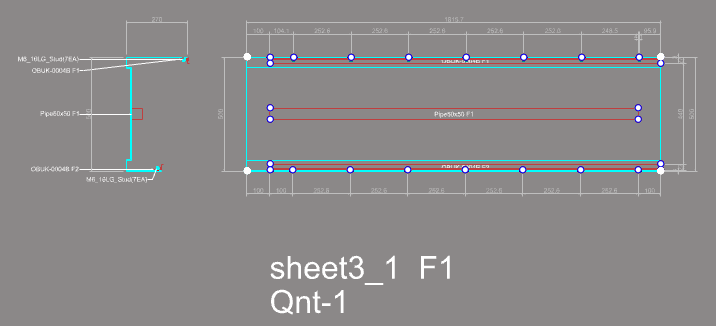

RCW for Rhino · 5.3.1 에 새로 들어온 것
단면 여러 개를 한 부재로 쓰는 일과, 부재에 딸려 가는 부속을 다루는 네 명령입니다. 묶는 명령 둘과 제대로 묶였는지 확인하는 목록 둘이 짝을 이룹니다.
묶는다
ComP · XcomP
붙어서 한 부재로 쓰이는 프로파일을 하나의 이름으로
묶는다
FabG · XFabG
Main 과 그에 붙는 Sub 를 한 세트로
확인한다
ComPlist · FabGList
묶은 것을 도면에 표로 펼쳐 잘못을 빨갛게
폴리아미드 단열바처럼 서로 붙어 한 부재로 쓰이는 프로파일 여러 개를 하나의 이름으로 묶습니다. 묶고 나면 가공도가 3~4장이 아니라 1장이고, Molist · FabNo 도 1개로 셉니다.
ComP.Pname 이 합성 모드로 열립니다 — 여기에 넣은 합성 이름이 가공도·리스트에 나오는 부재 이름입니다.UMD 를 돌리면 구성원들이 하나의 부재로 합쳐집니다.XcomP.| 하나로 | 가공도 · FabNo · Molist · Cuttinglist · Fablist · FabTable · UnitList · IFC |
|---|---|
| 그대로 | 구성원의 이름 · 단중 · 재질 · 색상 — 알루미늄과 폴리아미드를 나누어 발주해야 하므로 |
| 중량 | 합성의 단위중량은 구성원 중량의 합(직접 적으면 그 값이 우선) |
ComP 는 단면에 표시만 씁니다 —
실제로 합쳐지는 것은 모델링 중 한 번뿐이라, 묶은 뒤에도 구성원 단면을 따로 고치실 수 있습니다.
고르신 단면 중 합성 프로파일만 모아, 합성마다 한 칸씩 도면에 그립니다 — 형상 · 합성 이름 · 구성원이 함께 나오고, 잘못 묶인 것은 빨간 글자로 무엇이 문제인지 적습니다.
한 단면 group 안에서 선택된 Main 프로파일과, 그와 함께 가공도에 표시되기를 원하는 Sub 프로파일을 한 세트로 묶습니다. 첫 번째로 고른 것이 Main, 그 뒤에 고른 것이 모두 Sub 입니다.
FabBomTable)가 그 Sub 들의 수량을 셉니다.XFabG — 단면의 이름·데이터는 그대로입니다.UMD 부터 다시 돌리셔야 결과에 반영됩니다.
묶어 두신 세트는 Main 프로파일의 가공도 한 장에 함께 나옵니다. Sub 는 이름·가공번호와 함께 Parts 로 표시되고, 수량은 부속자재 표가 셉니다.

ComP)으로 묶인 부재는 한 장으로 나옵니다.ComP · FabG 로 묶기 → ComPlist · FabGList 로 확인UMD → FabNo → FabTable → FDwg
FabG 로 묶은 세트를 세트마다 한 칸씩 도면에 그려 보여 줍니다 —
Main 과 Sub 가 함께 적히고, 잘못 묶인 것은 빨간 글자로 알려 줍니다.
PFList 와 같습니다.정리
하나
묶는다
ComP 는 붙어서 한 부재가 되는 프로파일을, FabG 는 Main 과 그에 붙는 Sub 를 묶습니다.
둘
확인한다
ComPlist · FabGList 가 묶은 것을 표로 펼치고 잘못은 빨갛게 적습니다.
셋
가공도로
합성은 한 장으로, 세트의 Sub 는 Main 의 Parts 로 나오고 수량이 세어집니다.